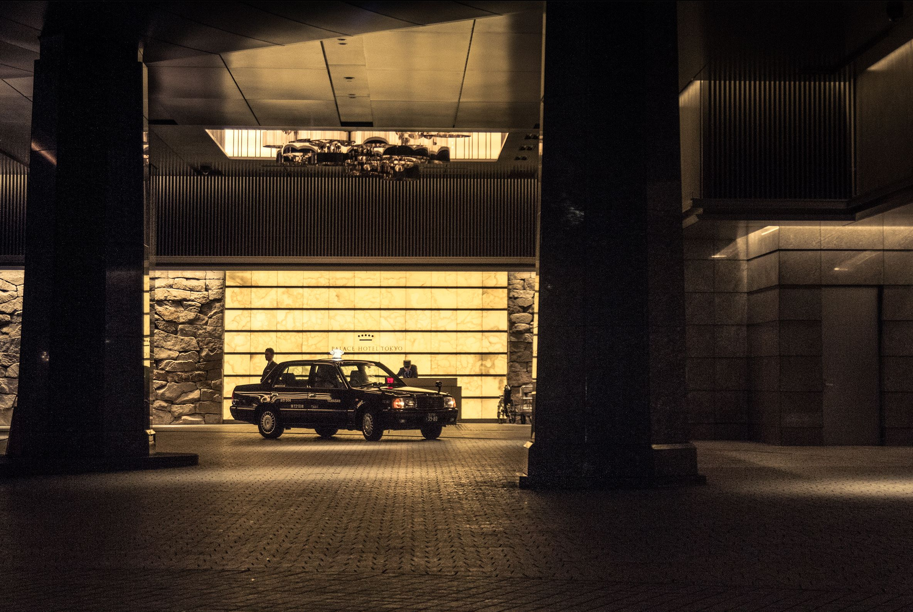
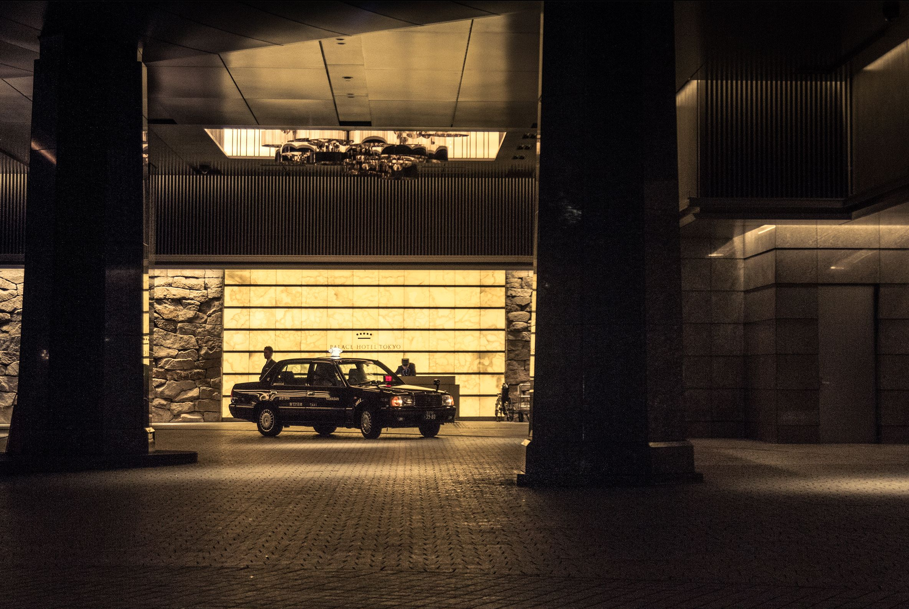
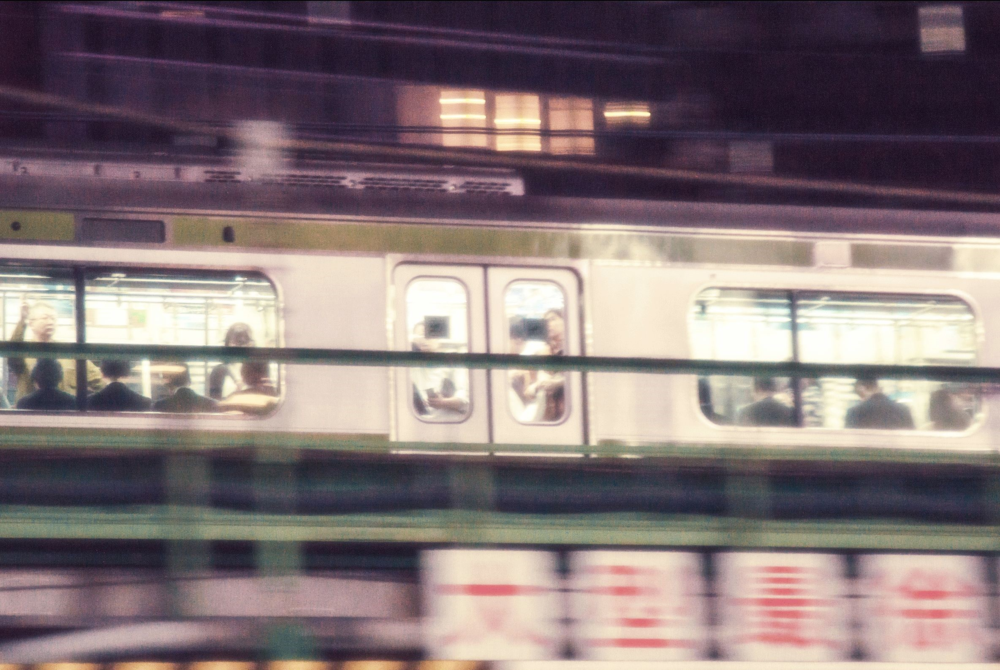
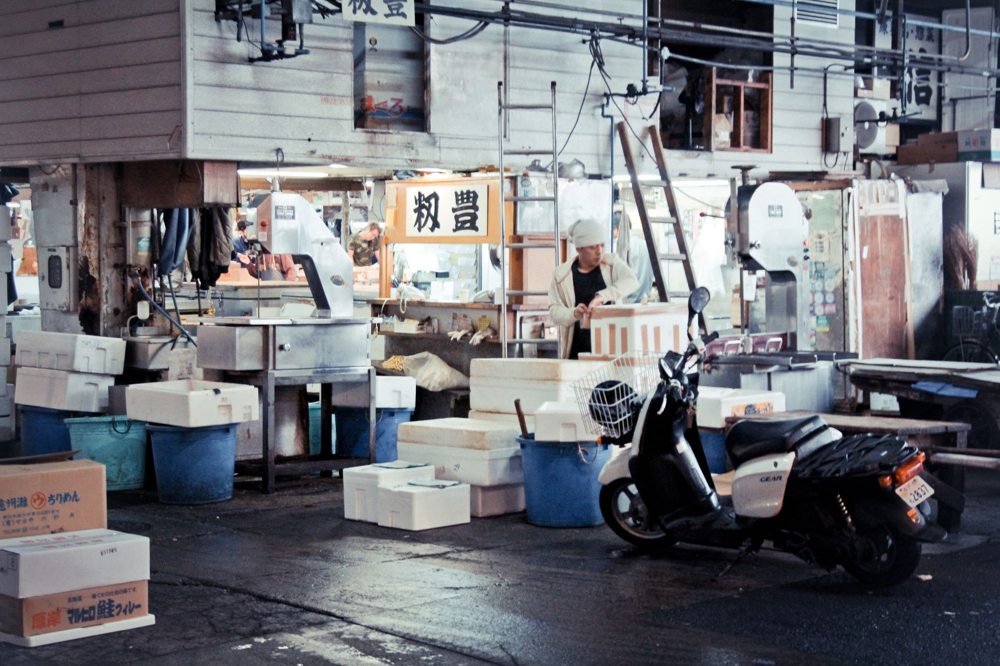

postcards from
postcards
from
from
TOKYO
postcards from
"In the manner that's often customary to my solo voyages, I set out without much of a blueprint in mind. A month stretched before me, an expanse of time in which the city's avenues and alleyways could reveal themselves at their own pace. Thousands of steps and an almost sinful indulgence in the freshest of seafoods later, I've come back, not just with memories, but with a cache of stills capturing moments from the journey."
"The taxis stood out immediately. Bright and impeccably kept, many were throwbacks to the late '80s. As they zipped under neon lights, they represented Tokyo's blend of old and new. With their white-gloved drivers and quiet efficiency, these cars were more than transport—they were a brief immersion into the city's unique rhythm, where yesterday meets today."

"Tokyo's heartbeat is its people. Always on the move, they flow through the city with a purposeful grace. Day or night, the streets pulse with energy, as locals navigate narrow alleys and broad avenues alike. It's a dance of precision and fluidity, where the city never truly rests.
"... and then there's the thousands of small alleyway eateries, seemingly on every corner, beckoning with warm lights and the irresistible aroma of sizzling dishes."



add a line or two about makoto
taxis at night
tokyo
+